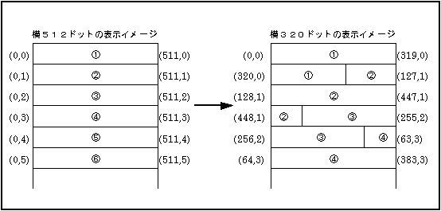
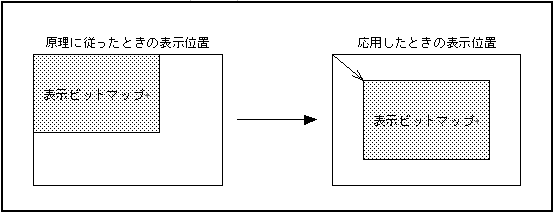
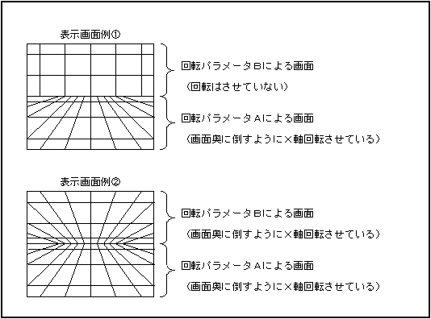
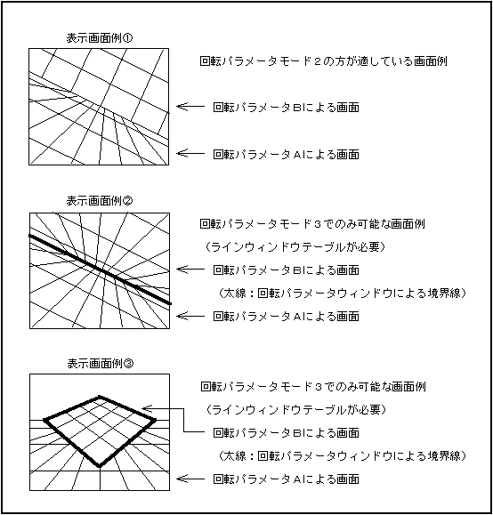
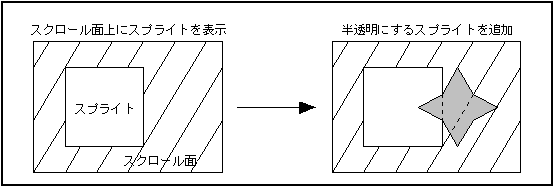

★
HARDWARE Manual★
VDP2ユーザーズマニュアル★
第15章 VDP2の使用方法
★
HARDWARE Manual★
VDP2ユーザーズマニュアル★
第15章 VDP2の使用方法
図15.1 ビットマップの表示イメージ

以降、ＶＤＰ２のビットマップサイズを横５１２ドット×縦２５６ドットと設定したものとして説明します。 また、表示させるビットマップの水平方向サイズは８の整数倍とし、 表示開始ラインをｎ＝０、表示開始セルをｗ＝０とします。
（ｎライン目の水平方向ラインスクロール値）
＝｛00010000H×（水平方向サイズ）×ｎ｝＆01ff0000H
（ｗセル目の縦セルスクロール値）＝00000400H×ｗ
address +0 +2 +4 +6 +8 +A +C +E 25F80000H 8000 0000 0000 0000 0000 0000 0000 0200 ←縦セルスクロールテーブルのため、 25F80010H 4444 4444 ffff ffff 4444 4444 cfff ffff ＶＲＡＭ－Ｂのみ分割する 25F80020H 0001 0000 0000 0000 0042 0000 0000 0000 ←１６７７万色ビットマップで、サイズを 25F80030H 0000 0000 0000 0000 0000 0000 0000 0000 横５１２ドット×縦２５６ドットにする 25F80040H 0000 0000 0000 0000 0000 0000 0000 0000 25F80050H 0000 0000 0000 0000 0000 0000 0000 0000 25F80060H 0000 0000 0000 0000 0000 0000 0000 0000 25F80070H 0000 0000 0000 0000 0001 0000 0001 0000 25F80080H 0000 0000 0000 0000 0000 0000 0000 0000 25F80090H 0000 0000 0000 0000 0000 0007 0003 8000 ←ラインスクロール（水平、垂直方向画面 25F800A0H 0003 0000 0000 0000 0000 0000 0000 0000 スクロール値）と縦セルスクロールを有 25F800B0H 0000 0000 0000 0000 0000 0000 0000 0000 効にする 25F800C0H 0000 0000 0000 0000 0000 0000 0000 0000 25F800D0H 0000 0000 0000 0000 0000 0000 0000 0000 25F800E0H 0000 0000 0000 0000 0000 0000 0000 0000 25F800F0H 0000 0000 0000 0000 0007 0000 0000 0000 ←ＮＢＧ０だけ表示する 25F80100H 0000 0000 0000 0000 0000 0000 0000 0000 25F80110H 0000 0000 0000 0000 0000 0000 0000 0000
address +0 +4 +8 +C 25E70000H 00000000 00000400 00000800 00000c00 25E70010H 00001000 00001400 00001800 00001c00 25E70020H 00002000 00002400 00002800 00002c00 25E70030H 00003000 00003400 00003800 00003c00 25E70040H 00004000 00004400 00004800 00004c00 25E70050H 00005000 00005400 00005800 00005c00 25E70060H 00006000 00006400 00006800 00006c00 25E70070H 00007000 00007400 00007800 00007c00 25E70080H 00008000 00008400 00008800 00008c00 25E70090H 00009000 00009400 00009800 00009c00 25E700A0H 0000a000 0000a400 0000a800 0000ac00 ←この例の場合、４１セル目以上 のデータは使用されない
address +0 +4 +8 +C 25E60000H 00000000 00000000 01400000 0000a000 25E60010H 00800000 00010000 01c00000 0001e000 25E60020H 01000000 00028000 00400000 00030000 25E60030H 01800000 0003c000 00c00000 00040000 25E60040H 00000000 00050000 01400000 0005a000 25E60050H 00800000 00060000 01c00000 0006e000 25E60060H 01000000 00078000 00400000 00080000 25E60070H 01800000 0008c000 00c00000 00090000 25E60080H 00000000 000a0000 01400000 000aa000 25E60090H 00800000 000b0000 01c00000 000be000 25E600A0H 01000000 000c8000 00400000 000d0000 25E600B0H 01800000 000dc000 00c00000 000e0000 25E600C0H 00000000 000f0000 01400000 000fa000 25E600D0H 00800000 00100000 01c00000 0010e000 25E600E0H 01000000 00118000 00400000 00120000 25E600F0H 01800000 0012c000 00c00000 00130000 25E60100H 00000000 00140000 01400000 0014a000 25E60110H 00800000 00150000 01c00000 0015e000 25E60120H 01000000 00168000 00400000 00170000 25E60130H 01800000 0017c000 00c00000 00180000 25E60140H 00000000 00190000 01400000 0019a000 25E60150H 00800000 001a0000 01c00000 001ae000 25E60160H 01000000 001b8000 00400000 001c0000 25E60170H 01800000 001cc000 00c00000 001d0000 25E60180H 00000000 001e0000 01400000 001ea000 25E60190H 00800000 001f0000 01c00000 001fe000 25E601A0H 01000000 00208000 00400000 00210000 25E601B0H 01800000 0021c000 00c00000 00220000 25E601C0H 00000000 00230000 01400000 0023a000 25E601D0H 00800000 00240000 01c00000 0024e000 25E601E0H 01000000 00258000 00400000 00260000 25E601F0H 01800000 0026c000 00c00000 00270000 25E60200H 00000000 00280000 01400000 0028a000 25E60210H 00800000 00290000 01c00000 0029e000 25E60220H 01000000 002a8000 00400000 002b0000 25E60230H 01800000 002bc000 00c00000 002c0000 25E60240H 00000000 002d0000 01400000 002da000 25E60250H 00800000 002e0000 01c00000 002ee000 25E60260H 01000000 002f8000 00400000 00300000 25E60270H 01800000 0030c000 00c00000 00310000 25E60280H 00000000 00320000 01400000 0032a000 25E60290H 00800000 00330000 01c00000 0033e000 25E602A0H 01000000 00348000 00400000 00350000 25E602B0H 01800000 0035c000 00c00000 00360000 25E602C0H 00000000 00370000 01400000 0037a000 25E602D0H 00800000 00380000 01c00000 0038e000 25E602E0H 01000000 00398000 00400000 003a0000 25E602F0H 01800000 003ac000 00c00000 003b0000 address +0 +4 +8 +C 25E60300H 00000000 003c0000 01400000 003ca000 25E60310H 00800000 003d0000 01c00000 003de000 25E60320H 01000000 003e8000 00400000 003f0000 25E60330H 01800000 003fc000 00c00000 00400000 25E60340H 00000000 00410000 01400000 0041a000 25E60350H 00800000 00420000 01c00000 0042e000 25E60360H 01000000 00438000 00400000 00440000 25E60370H 01800000 0044c000 00c00000 00450000 25E60380H 00000000 00460000 01400000 0046a000 25E60390H 00800000 00470000 01c00000 0047e000 25E603A0H 01000000 00488000 00400000 00490000 25E603B0H 01800000 0049c000 00c00000 004a0000 25E603C0H 00000000 004b0000 01400000 004ba000 25E603D0H 00800000 004c0000 01c00000 004ce000 25E603E0H 01000000 004d8000 00400000 004e0000 25E603F0H 01800000 004ec000 00c00000 004f0000 25E60400H 00000000 00500000 01400000 0050a000 25E60410H 00800000 00510000 01c00000 0051e000 25E60420H 01000000 00528000 00400000 00530000 25E60430H 01800000 0053c000 00c00000 00540000 25E60440H 00000000 00550000 01400000 0055a000 25E60450H 00800000 00560000 01c00000 0056e000 25E60460H 01000000 00578000 00400000 00580000 25E60470H 01800000 0058c000 00c00000 00590000 25E60480H 00000000 005a0000 01400000 005aa000 25E60490H 00800000 005b0000 01c00000 005be000 25E604A0H 01000000 005c8000 00400000 005d0000 25E604B0H 01800000 005dc000 00c00000 005e0000 25E604C0H 00000000 005f0000 01400000 005fa000 25E604D0H 00800000 00600000 01c00000 0060e000 25E604E0H 01000000 00618000 00400000 00620000 25E604F0H 01800000 0062c000 00c00000 00630000 25E60500H 00000000 00640000 01400000 0064a000 25E60510H 00800000 00650000 01c00000 0065e000 25E60520H 01000000 00668000 00400000 00670000 25E60530H 01800000 0067c000 00c00000 00680000 25E60540H 00000000 00690000 01400000 0069a000 25E60550H 00800000 006a0000 01c00000 006ae000 25E60560H 01000000 006b8000 00400000 006c0000 25E60570H 01800000 006cc000 00c00000 006d0000 25E60580H 00000000 006e0000 01400000 006ea000 25E60590H 00800000 006f0000 01c00000 006fe000 25E605A0H 01000000 00708000 00400000 00710000 25E605B0H 01800000 0071c000 00c00000 00720000 25E605C0H 00000000 00730000 01400000 0073a000 25E605D0H 00800000 00740000 01c00000 0074e000 25E605E0H 01000000 00758000 00400000 00760000 25E605F0H 01800000 0076c000 00c00000 00770000 address +0 +4 +8 +C 25E60600H 00000000 00780000 01400000 0078a000 25E60610H 00800000 00790000 01c00000 0079e000 25E60620H 01000000 007a8000 00400000 007b0000 25E60630H 01800000 007bc000 00c00000 007c0000 25E60640H 00000000 007d0000 01400000 007da000 25E60650H 00800000 007e0000 01c00000 007ee000 25E60660H 01000000 007f8000 00400000 00800000 25E60670H 01800000 0080c000 00c00000 00810000 25E60680H 00000000 00820000 01400000 0082a000 25E60690H 00800000 00830000 01c00000 0083e000 25E606A0H 01000000 00848000 00400000 00850000 25E606B0H 01800000 0085c000 00c00000 00860000 25E606C0H 00000000 00870000 01400000 0087a000 25E606D0H 00800000 00880000 01c00000 0088e000 25E606E0H 01000000 00898000 00400000 008a0000 25E606F0H 01800000 008ac000 00c00000 008b0000
図15.2 ビットマップの表示位置

address +0 +2 +4 +6 +8 +A +C +E 25F80000H 8000 0000 0000 0000 0000 0000 0000 0100 ←ビットマップデータが１バンク内に入るので、 25F80010H 4444 4444 cfff ffff ffff ffff ffff ffff ダブルバッファ用に一方だけ分割 25F80020H 0001 0000 0000 0000 0042 0000 0000 0000 ←１６７７万色ビットマップで、サイズを 25F80030H 0000 0000 0000 0000 0000 0000 0000 0000 横５１２×縦２５６ドットにする 25F80040H 0000 0000 0000 0000 0000 0000 0000 0000 25F80050H 0000 0000 0000 0000 0000 0000 0000 0000 25F80060H 0000 0000 0000 0000 0000 0000 0000 0000 25F80070H 07c0 0000 0000 0000 0001 0000 0001 0000 ←表示開始座標に合わせて、水平方向画面 25F80080H 0000 0000 0000 0000 0000 0000 0000 0000 スクロール値を設定する 25F80090H 0000 0000 0000 0000 0000 0007 0001 8000 ←ラインスクロール（水平、垂直方向画面 25F800A0H 0001 0000 0000 0000 0000 0000 0003 ffff スクロール値）と縦セルスクロールを有効にする 25F800B0H 0000 0000 0000 0000 0000 0000 0000 0000 25F800C0H 0080 0028 01fe 00b7 0000 0000 0000 0000 ←ウィンドウを設定する 25F800D0H 0003 0000 0000 0000 0000 0000 0000 0000 25F800E0H 0000 0000 0000 0000 0000 0000 0000 0000 25F800F0H 0000 0000 0000 0000 0007 0000 0000 0000 ←ＮＢＧ０だけを表示する 25F80100H 0000 0000 0000 0000 0000 0000 0000 0000 25F80110H 0000 0000 0000 0000 0000 0000 0000 0000
address +0 +4 +8 +C 25E30000H 00000000 00000400 00000800 00000c00 25E30010H 00001000 00001400 00001800 00001c00 25E30020H 00002000 00002400 00002800 00002c00 25E30030H 00003000 00003400 00003800 00003c00 25E30040H 00004000 00004400 00004800 00004c00 25E30050H 00005000 00005400 00005800 00005c00 25E30060H 00006000 00006400 00006800 00006c00 25E30070H 00007000 00007400 00007800 00007c00 25E30080H 00008000 00008400 00008800 00008c00 25E30090H 00009000 00009400 00009800 00009c00 25E300A0H 0000a000 0000a400 0000a800 0000ac00 ←この例の場合、４１セル目以上 のデータは使用されない
address +0 +4 +8 +C 25E20000H 00000000 00000000 00000000 00000000 25E20010H 00000000 00000000 00000000 00000000 25E20020H 00000000 00000000 00000000 00000000 25E20030H 00000000 00000000 00000000 00000000 25E20040H 00000000 00000000 00000000 00000000 25E20050H 00000000 00000000 00000000 00000000 25E20060H 00000000 00000000 00000000 00000000 25E20070H 00000000 00000000 00000000 00000000 25E20080H 00000000 00000000 00000000 00000000 25E20090H 00000000 00000000 00000000 00000000 25E200A0H 00000000 00000000 00000000 00000000 25E200B0H 00000000 00000000 00000000 00000000 25E200C0H 00000000 00000000 00000000 00000000 25E200D0H 00000000 00000000 00000000 00000000 25E200E0H 00000000 00000000 00000000 00000000 25E200F0H 00000000 00000000 00000000 00000000 25E20100H 00000000 00000000 00000000 00000000 25E20110H 00000000 00000000 00000000 00000000 25E20120H 00000000 00000000 00000000 00000000 25E20130H 00000000 00000000 00000000 00000000 25E20140H 00000000 00000000 00c00000 00000000 ←ビットマップ表示開始ライン 25E20150H 01800000 0000a000 00400000 00010000 25E20160H 01000000 00010000 01c00000 0001c000 25E20170H 00800000 00020000 01400000 00020000 25E20180H 00000000 00030000 00c00000 00030000 25E20190H 01800000 0003a000 00400000 00040000 25E201A0H 01000000 00040000 01c00000 0004c000 25E201B0H 00800000 00050000 01400000 00050000 25E201C0H 00000000 00060000 00c00000 00060000 25E201D0H 01800000 0006a000 00400000 00070000 25E201E0H 01000000 00070000 01c00000 0007c000 25E201F0H 00800000 00080000 01400000 00080000 25E20200H 00000000 00090000 00c00000 00090000 25E20210H 01800000 0009a000 00400000 000a0000 25E20220H 01000000 000a0000 01c00000 000ac000 25E20230H 00800000 000b0000 01400000 000b0000 25E20240H 00000000 000c0000 00c00000 000c0000 25E20250H 01800000 000ca000 00400000 000d0000 25E20260H 01000000 000d0000 01c00000 000dc000 25E20270H 00800000 000e0000 01400000 000e0000 25E20280H 00000000 000f0000 00c00000 000f0000 25E20290H 01800000 000fa000 00400000 00100000 25E202A0H 01000000 00100000 01c00000 0010c000 25E202B0H 00800000 00110000 01400000 00110000 25E202C0H 00000000 00120000 00c00000 00120000 25E202D0H 01800000 0012a000 00400000 00130000 25E202E0H 01000000 00130000 01c00000 0013c000 25E202F0H 00800000 00140000 01400000 00140000 address +0 +4 +8 +C 25E20300H 00000000 00150000 00c00000 00150000 25E20310H 01800000 0015a000 00400000 00160000 25E20320H 01000000 00160000 01c00000 0016c000 25E20330H 00800000 00170000 01400000 00170000 25E20340H 00000000 00180000 00c00000 00180000 25E20350H 01800000 0018a000 00400000 00190000 25E20360H 01000000 00190000 01c00000 0019c000 25E20370H 00800000 001a0000 01400000 001a0000 25E20380H 00000000 001b0000 00c00000 001b0000 25E20390H 01800000 001ba000 00400000 001c0000 25E203A0H 01000000 001c0000 01c00000 001cc000 25E203B0H 00800000 001d0000 01400000 001d0000 25E203C0H 00000000 001e0000 00c00000 001e0000 25E203D0H 01800000 001ea000 00400000 001f0000 25E203E0H 01000000 001f0000 01c00000 001fc000 25E203F0H 00800000 00200000 01400000 00200000 25E20400H 00000000 00210000 00c00000 00210000 25E20410H 01800000 0021a000 00400000 00220000 25E20420H 01000000 00220000 01c00000 0022c000 25E20430H 00800000 00230000 01400000 00230000 25E20440H 00000000 00240000 00c00000 00240000 25E20450H 01800000 0024a000 00400000 00250000 25E20460H 01000000 00250000 01c00000 0025c000 25E20470H 00800000 00260000 01400000 00260000 25E20480H 00000000 00270000 00c00000 00270000 25E20490H 01800000 0027a000 00400000 00280000 25E204A0H 01000000 00280000 01c00000 0028c000 25E204B0H 00800000 00290000 01400000 00290000 25E204C0H 00000000 002a0000 00c00000 002a0000 25E204D0H 01800000 002aa000 00400000 002b0000 25E204E0H 01000000 002b0000 01c00000 002bc000 25E204F0H 00800000 002c0000 01400000 002c0000 25E20500H 00000000 002d0000 00c00000 002d0000 25E20510H 01800000 002da000 00400000 002e0000 25E20520H 01000000 002e0000 01c00000 002ec000 25E20530H 00800000 002f0000 01400000 002f0000 25E20540H 00000000 00300000 00c00000 00300000 25E20550H 01800000 0030a000 00400000 00310000 25E20560H 01000000 00310000 01c00000 0031c000 25E20570H 00800000 00320000 01400000 00320000 25E20580H 00000000 00330000 00c00000 00330000 25E20590H 01800000 0033a000 00400000 00340000 25E205A0H 01000000 00340000 01c00000 0034c000 25E205B0H 00800000 00350000 01400000 00350000 ←ビットマップ表示終了ライン 25E205C0H 00000000 00000000 00000000 00000000 25E205D0H 00000000 00000000 00000000 00000000 25E205E0H 00000000 00000000 00000000 00000000 25E205F0H 00000000 00000000 00000000 00000000 address +0 +4 +8 +C 25E20600H 00000000 00000000 00000000 00000000 25E20610H 00000000 00000000 00000000 00000000 25E20620H 00000000 00000000 00000000 00000000 25E20630H 00000000 00000000 00000000 00000000 25E20640H 00000000 00000000 00000000 00000000 25E20650H 00000000 00000000 00000000 00000000 25E20660H 00000000 00000000 00000000 00000000 25E20670H 00000000 00000000 00000000 00000000 25E20680H 00000000 00000000 00000000 00000000 25E20690H 00000000 00000000 00000000 00000000 25E206A0H 00000000 00000000 00000000 00000000 25E206B0H 00000000 00000000 00000000 00000000 25E206C0H 00000000 00000000 00000000 00000000 25E206D0H 00000000 00000000 00000000 00000000 25E206E0H 00000000 00000000 00000000 00000000 25E206F0H 00000000 00000000 00000000 00000000
address +0 +2 +4 +6 +8 +A +C +E 25F80000H 8000 0000 0000 0000 0000 0000 0000 0000 ←必要がないので、ＶＲＡＭは２分割しない 25F80010H 4444 ffff ffff ffff ffff ffff ffff ffff 25F80020H 0001 0000 0000 0000 0032 0000 0000 0000 ←３２７６８万色ビットマップで、サイズを 25F80030H 0000 0000 0000 0000 0000 0000 0000 0000 横５１２ドット×縦２５６ドットにする 25F80040H 0000 0000 0000 0000 0000 0000 0000 0000 25F80050H 0000 0000 0000 0000 0000 0000 0000 0000 25F80060H 0000 0000 0000 0000 0000 0000 0000 0000 25F80070H 0000 0000 0000 0000 0001 0000 0001 0000 25F80080H 0000 0000 0000 0000 0000 0000 0000 0000 25F80090H 0000 0000 0000 0000 0000 0000 0000 0000 25F800A0H 0000 0000 0000 0000 0000 0000 0000 0000 25F800B0H 0000 0000 0000 0000 0000 0000 0000 0000 25F800C0H 0000 0000 0000 0000 0000 0000 0000 0000 25F800D0H 0000 0000 0000 0000 0000 0000 0000 0000 25F800E0H 0000 0000 0000 0000 0000 0000 0000 0000 25F800F0H 0000 0000 0000 0000 0007 0000 0000 0000 ←ＮＢＧ０だけを表示する 25F80100H 0000 0000 0000 0000 0000 0000 0000 0000 25F80110H 0000 0000 0000 0000 0000 0000 0000 0000
address +0 +2 +4 +6 +8 +A +C +E 25F80010H ffff ffff ffff ffff 4444 ffff ffff ffff 25F80030H 0000 0000 0000 0000 0000 0000 0002 0000
address +0 +2 +4 +6 +8 +A +C +E 25F80010H 4444 ffff ffff ffff ffff ffff ffff ffff 25F80030H 0000 0000 0000 0000 0000 0000 0000 0000
図15.3 ＲＢＧ０の表示画面例

図15.4 回転パラメータモード２、３の表示画面例

図15.5 半透明にするスプライト表示例

address +0 +2 +4 +6 +8 +A +C +E 25F800E0H 1400 0000 0000 0000 0020 0000 0040 0000
address +0 +2 +4 +6 +8 +A +C +E 25F800F0H 0504 0000 0000 0000 0203 0000 0000 0000
address +0 +2 +4 +6 +8 +A +C +E 25F80100H 1c1f 1418 0c10 0408 0000 0000 0000 0000
address +0 +2 +4 +6 +8 +A +C +E 25F800A0H 0000 0000 0000 0000 0003 fffe 0003 ffff ←ＶＤＰ２レジスタ 25E7FFF0H XXXX XXXX XXXX XXXX XXXX XXXX 0000 0000 ←ＶＲＡＭ 25F00000H 0000 XXXX XXXX XXXX XXXX XXXX XXXX XXXX ←カラーＲＡＭ
カラーバンクデータ 奥行き方向の位置 0100 0XXX XXXX 0000 最も手前側（カラー演算しない） 0011 1XXX XXXX 0000 ↑ 0011 0XXX XXXX 0000 0010 1XXX XXXX 0000 0010 0XXX XXXX 0000 0001 1XXX XXXX 0000 0001 0XXX XXXX 0000 0000 1XXX XXXX 0000 ↓ 0000 0XXX XXXX 0000 最も奥側（黒になる）
★
HARDWARE Manual★
VDP2ユーザーズマニュアル★
第15章 VDP2の使用方法